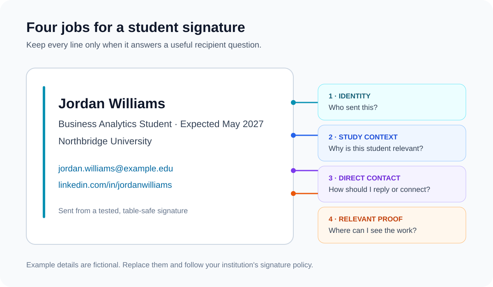
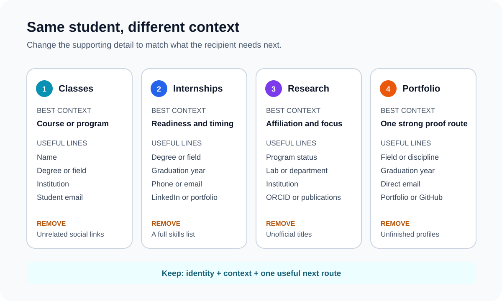

Student Email Signature Examples: 7 Professional Templates
The short answer: a student email signature should identify you, add the study context the recipient needs, and offer one useful next route. Start with your name, institution, degree or field, and email address. Add an expected graduation year, phone number, LinkedIn profile, portfolio, GitHub profile, or research role only when it helps that particular audience.
Your signature for a professor does not need to look like your signature for an internship application. Academic emails need course or research context; recruiters need degree, graduation timing, and proof of work; networking contacts need a reliable way to remember and reach you.
The useful rule is identity, context, proof, contact. Include enough to answer those four questions, then stop before the signature becomes a miniature resume.

What should a student email signature include?
| Element | Include it when | Leave it out when |
|---|---|---|
| Name | Always. Use the name you want recipients to use. | Never replace it with initials alone when the recipient may not know you. |
| Institution and field | They explain your academic context or relevance to the conversation. | The email is personal and the institution adds no useful context. |
| Graduation year | You are applying for internships, graduate roles, scholarships, or placements. | The timing is uncertain or irrelevant to the recipient. |
| Phone number | You want recruiters, collaborators, or event contacts to call you. | You prefer email and do not want the number broadly distributed. |
| The profile is current, public, and adds professional context. | It is incomplete, private, or less useful than a portfolio or project. | |
| Portfolio, GitHub, or publications | The destination contains work relevant to the reader. | The page is unfinished, outdated, or unrelated to the message. |
| Pronouns | You choose to share them and they help recipients address you correctly. | You do not want to include them; they are optional. |
Penn Career Services gives similar practical guidance for students contacting employers and networking contacts: use your preferred or legal name, add institution and degree details when relevant, and consider professional LinkedIn, website, and contact links. It also warns that plain-text email may not display icons or images. See its guidance on email signatures for students searching for internships or jobs.
Do not copy every possible field. The right signature is the smallest version that gives this recipient the context they need. A professor may need your course and student number if your institution requires it; a recruiter is more likely to need your degree, graduation year, and portfolio.
Choose the signature by message context

Seven student email signature examples
These are starting points, not fields you must reproduce exactly. Replace the sample details, remove anything that does not help your recipient, and follow any signature rules set by your school.
1. Everyday college student
For professors, campus staff, clubs, and general academic email.
2. Internship applicant
For applications, recruiter follow-ups, and career fairs.
Business Analytics Student · Expected May 2027
Northbridge University
jordan.williams@example.edu · LinkedIn
3. Graduate student and research assistant
For supervisors, research collaborators, conferences, and labs.
MSc Environmental Science · Research Assistant
Coastal Systems Lab · Northbridge University
priya.nair@example.edu · ORCID
4. Doctoral researcher
For academic correspondence when program status and research area matter.
PhD Researcher · Human-Computer Interaction
School of Information · Northbridge University
elena.rossi@example.edu · Publications
5. Design or creative student
For freelance enquiries, placements, reviews, and creative networking.
6. Software or engineering student
For technical internships, project teams, hackathons, and mentors.
7. Recent graduate
For the transition after graduation, before you have a permanent role.
What should students leave out?
- A full resume in the signature. Awards, every club, every course, and a long skills list make replies harder to scan.
- GPA by default. Include it in an application when requested, not in every message you send.
- Claims that overstate your status. Use your institution's official wording for candidate, researcher, assistant, scholar, or representative roles.
- Unrelated social accounts. Link only to profiles that help this audience understand your work or contact you.
- Quotes and slogans. They add length without helping a professor, recruiter, or collaborator act.
- Essential information stored only in an image. Names, study details, and contact routes should remain readable text when images are blocked.
Student signature design rules
- Keep the name and essential details as real text.
- Use one font family and a clear name-first hierarchy.
- Choose one primary proof link instead of every account you own.
- Use school branding only when your institution permits it.
- Keep images small, hosted on public HTTPS URLs, and supported by alt text.
- Check the signature in a reply, where long designs become repetitive quickly.
- Send tests to desktop and mobile inboxes before using it for applications.
If you add linked profile icons, follow the destination-first approach in our guide to social media icons for email signatures. For more layout inspiration, compare the broader library of professional email signature examples.
How to add your signature in Gmail or Outlook
Gmail
Open Gmail settings, find the Signature section, create a signature, paste or format the content, choose the defaults for new messages and replies, and save the changes. Google notes that Gmail signatures can contain images and have a 10,000-character limit. Follow Google's current instructions for creating a Gmail signature, or use our step-by-step Gmail signature guide.
Outlook
Outlook's controls differ across the new Outlook, classic Outlook, Outlook on the web, and mobile apps. Create or paste the signature in the relevant account settings, select when it should appear, then send a test. Use our Outlook installation guide for version-specific routes.
Test the received message, not the editor
- Send a message to a personal inbox on a different service.
- Open it on desktop and mobile.
- Reply and check whether the signature remains compact.
- Block images and confirm every essential detail is still understandable.
- Click each profile or portfolio link once and confirm the exact public destination.
Already have signature HTML? The email signature health check flags insecure image URLs, missing alt text, oversized HTML, tracking pixels, and patterns that commonly cause trouble in Outlook or dark mode.
Build your student email signature
Choose a layout, keep only the details your audience needs, and copy a table-safe signature into Gmail or Outlook.
Create Your Email SignatureFrequently asked questions
What should a student email signature include?
Use your name, institution, degree or field of study, and one useful contact or proof link. Add an expected graduation year, phone number, LinkedIn profile, portfolio, or research role only when it helps the recipient.
Should a student put GPA in an email signature?
Usually no. Your signature identifies you and provides useful routes to contact or evaluate your work; it is not a replacement for a resume. Include a GPA only when a specific academic or recruiting context requires it.
Should students include LinkedIn?
Include LinkedIn when the profile is current, public, and relevant to the people receiving your emails. A portfolio, GitHub profile, publication page, or project link may be more useful for some courses and careers.
Can I use my university logo?
Only if your institution's brand or IT policy permits it. Do not imply that you represent the institution in an official capacity when you do not. Keep your name and study details as text so the signature still works when images are blocked.